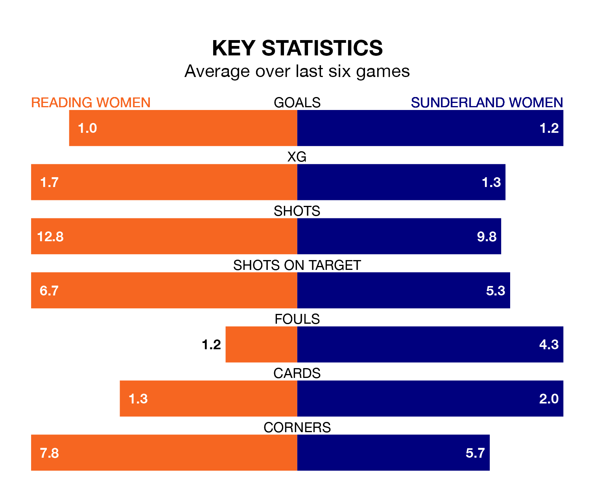

Mid-season relegation candidates Reading Women face a challenge against high-flying Sunderland Women at the Select Car Leasing Stadium on Sunday.
Reading Women are ninth in the FA Women's Championship table, and have picked up two wins and six draws in their 12 games to date.
Sunderland, meanwhile, are second in the standings with 28 points, having won eight and drawn four of their first 14 matches, and are one point behind table-toppers Charlton Athletic Ladies.
In Claudia Moan, Sunderland can rely on one of the league's safest pair of hands. She has kept seven clean sheets in her 14 appearances this season, and no 'keeper has prevented the opposition scoring more often in the FA Women's Championship.
In Reading's net, Emily Orman has four clean sheets in 11 games. She has conceded a goal every 71 minutes, more than twice as often as the 180 minutes between goals for Moan.
The Royals are in bad form in the FA Women's Championship, with no wins and three draws from their last six games.
With three wins and a draw over that period, the away team's form is much better – they have taken 10 points from 18, compared to the hosts' three.
In the last 10 years, Reading and Sunderland have played each other on seven occasions. Reading won one of them, Sunderland three, and they drew three times.
On average, the Royals scored 0.9 goals and Sunderland 1.4 in those matches.
Their last meeting was on October 15, when Sunderland won 3-1 at home.
With 12 goals in 12 games so far this season, Reading are the league's third-lowest scorers with 1.0 goals per game. And they are conceding more than average, letting in 17 goals at a rate of 1.4 per game.
Sunderland, meanwhile, are average scorers, with 1.3 goals per game. They have conceded 0.6 goals per game.
Reading's last match was on Sunday, a 2-2 draw against Lewes Women, with Bethan Roberts and Charlie Wellings getting the goals for the Royals.
Sunderland beat Blackburn Rovers Women 2-0 last time out, on January 27, with Emily Scarr and Katie Kitching on the scoresheet.
Updated: 09:21 (UTC), 30/01/24